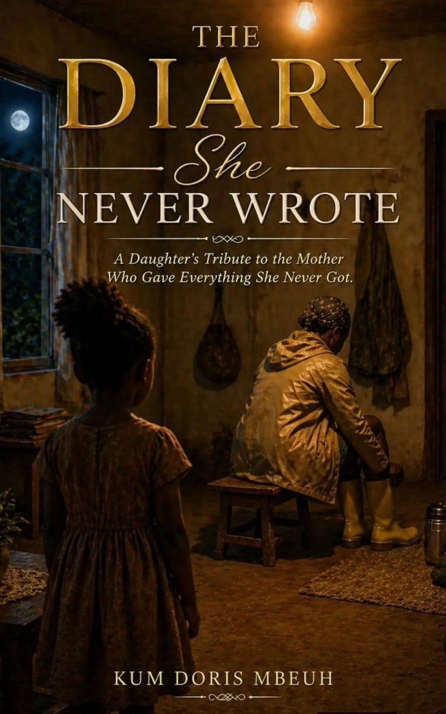

The Dairy She Never Wrote
She was not writing. She was living.
A Daughter's Tribute to the Mother Who Gave Everything She Never Got. It's available Now in print and on Amazon
Author: Doris Mbeuh Kum
BOOK DESCRIPTION
Some mothers write diaries. Mine lived one. Every day from the 3am boots hitting the floor before sunrise, to the envelope divided carefully on the kitchen table, to the corn beer brewed on Saturdays and sold on Sundays, to the farm walked to at night to avoid the heat of the day she was writing a story she never had the time or the pen to put down. This book is that diary. It is the story of a girl who wanted to play football. Who reached for sisterhood twice and was turned away. Who built a house franc by franc and raised a daughter on a seasonal wage and a dream that she redirected not inward, toward a life of her own making but outward, toward the lives of her children. It is a book about mothers. About daughters. About the things we carry without knowing where they came from. About the flowers that deserve to be given while the one you love can still smell them. It is not a perfect book. It is an honest one. And somewhere inside it you will find your own mother.
WHAT IS INSIDE
- 11 deeply personal chapters
- Reflection questions at the end of every chapter
- Blank diary pages at the back for the words you have been carrying
A NOTE FROM THE AUTHOR
"I was long convinced I would one day be an author. I always imagined I would write about accounting, finance, data, or research. But Mama you gave me no time for all that. Your life became my outline. Your voice became my pen. And the story you never wrote became the book I could not stop writing."
Doris Mbeuh Kum
WHO THIS BOOK IS FOR
This book is for every daughter who has watched her mother sacrifice in silence. For every mother whose story was lived but never recorded. For every person who still has time to give flowers and has not yet given them. For every African home where love was real but words were few. For everyone who has ever wondered what their mother wanted to be before she became their mother.
A NOTE FROM THE AUTHOR
"I was long convinced I would one day be an author. I always imagined I would write about accounting, finance, data, or research. But Mama you gave me no time for all that. Your life became my outline. Your voice became my pen. And the story you never wrote became the book I could not stop writing."
Doris Mbeuh Kum